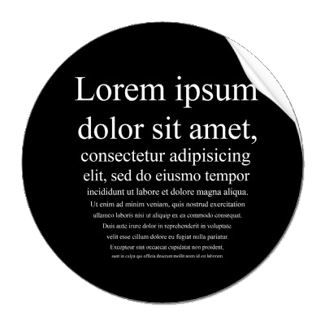

TransCent
A platform to streamline transplant-related research at the KU Leuven.
Transcending transplantation limits.
...
Mission statement

A platform to streamline transplant-related research at the KU Leuven.
Transcending transplantation limits.
...
Mission statementImproving the health and life of transplant recipients.
...